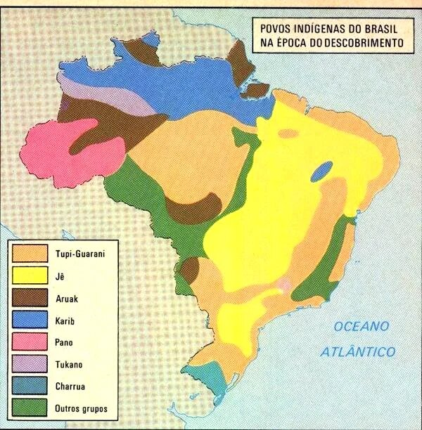

Uma sociedade diferente da dos portugueses
Segundo dados publicados pela Funai, havia neste lugar (Brasil) cerca de 3 milhões de índios antes de 1500. Esses eram divididos em tribos pertencentes a um tronco linguístico:
Cada tribo possuía sua própria cultura, religião e costumes. Dependiam da natureza para quase tudo. Se alimentavam a partir da pesca, caça e da agricultura de feijão, bata-doce e principalmente da mandioca. Também domesticavam animais de pequeno porte, por exemplo, porco do mato e capivara
Eles eram verdadeiros artistas! Com materiais coletados da natureza construíam arcos e flechas, suas habitações (oca), redes, cestos, panelas, potes, Balaios e Urutus para guardarem farinha, tapioca, beiju e outros utensílios domésticos. Faziam instrumentos musicais, como por exemplo, Japurutu, Cariçu e Flauta, cada um com seu som específico.
-Vídeo-
Os índios tinham apreso pelo belo, principalmente a beleza de seus corpos, por esse motivo se adornavam de penas e peles de animais e o urucum era utilizado para fazer as pinturas no corpo. Esse embelezamento estava muito ligado aos rituais religiosos de cada tribo.
Como sociedade possuíam uma organização social simples. Todos possuíam os mesmos direitos e recebiam o mesmo tratamento.
O trabalho era realizado por todos, mas para terem uma organização era dividido por sexo e idade. As mulheres cuidavam da comida, crianças e da agricultura. Os homens por sua vez, caçavam, guerreavam, pescavam, e derrubavam as árvores para o plantio ou para construção de ocas.
O pajé e o cacique tinham importância na organização social da tribo. todas as tribos acreditavam nas forças da natureza e nos espíritos dos antepassados. Para estes deuses e espíritos, faziam rituais, cerimônias e festas e o pajé era quem possuía essa ligação com os deuses transmitindo para a tribo as mensagens dos deuses. possuía também conhecimentos dos rituais, era também o curandeiro, possuindo conhecimentos dos chás e ervas para curar doenças. O cacique, fazia o papel de chefe, era quem organizava e orientava os índios.
O primeiro contato dos portugueses com os índios trouxe a nós informações sobre os eles e sua organização social. Um dos documentos é carta de Caminha, mas a partir desse contato a população indígena foi reduzida à selvagens ou mão de obra, com isso aqueles que não aceitavam o domínio Português eram mortos. Os índios passaram a serem escravizados para trabalharem nos engenhos de açúcar e a fazerem qualquer trabalho braçal.
Infelizmente a principal causa foi a redução da população indígena. O Censo de 2010, mostra que há 896.917 indígenas no território brasileiro